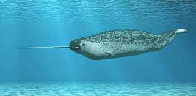

<DOCTYPE html>

  <head>
    <meta charset="utf-8">
    <title> narval </title>
  </head>

<p></img><p>

<style>


/*Colocamos una imagen de fondo al 'body' de nuestras páginas*/

body {  
  
  background-color: #777; 
}


/*Creamos la clase 'center' de forma que podamos centrar, por ejemplo, las tablas de nuestras páginas*/

.center{

	margin-left: auto;
	margin-right: auto;
}


/*Le damos formato a los encabezados H1*/
h1 {
  font-weight: bold;
  text-align: center;   
  font-family: Monaco, "Bitstream Vera Sans Mono", "Lucida Console", Terminal, monospace;
  color: #fff;
  
}

h2 {

  font-weight: bold;
  text-align: left;  
  font-family: Monaco, "Bitstream Vera Sans Mono", "Lucida Console", Terminal, monospace;
  color: white 	;

}

p, ul {

  font-family: Verdana, Helvetica, sans-serif;
  color: #fff;
  font-size: 12px; 

}


/*Le damos formato a los pies de imagen*/
figcaption {

  text-align: center;
}


/*Le damos formato a las imágenes*/
img {
  
  display: block;
  width: 50px;
  height: 50px;
  width: 100%;

}

</style>

</style>

<table border = '10' class= 'center' >  

<tr>
	<td><a href = 'html/casa.html'> <figcaption> Casa </figcaptaion></a></td>
                
	
           
        <td><a href = 'html/delfín.html'> <figcaptaion> Delfín</figcaptation></a></td>
	
 	<td><a href = 'html/ballena_jorobada.html'>  <figacaptation> Ballena_jorobada</figcaptation></a></td>
	
</tr>

<tr> 
	 <td><a href = 'html/delfín_de_río.html'> <figcatation> Delfín_de_río</figcaptation></a></td>

	 <td><a href = 'html/ballena_azul.html'> <figcaptation> Ballena_azul</figcaptation></a></td>
	
       	 <td><a href = 'html/orca.html'> <figcaptation> Orca</figcaptation></a></td>
               
</tr>
</html>

<h1> Monodon monoceros </h1> 
<body>

<h2>El narval (Monodon monoceros) es una especie de cetáceo odontoceto de la familia Monodontidae que habita los mares del Ártico y el norte del Océano Atlántico. Es el único integrante del género Monodon y una de las dos especies de la familia junto a la beluga (Delphinapterus leucas).

Los machos de esta especie se caracterizan por presentar un colmillo muy largo y retorcido de manera helicoidal que puede llegar a medir dos metros y pesar hasta diez kilogramos (en el Museo Rocsen en Nono, provincia de Córdoba en la República Argentina poseen un colmillo de 270 cm que según dice el fundador Juan Bouchon es el más grande del mundo[cita requerida]). Se cree que este diente especializado puede ser un receptor sensorial o un carácter sexual secundario.

Esta especie está adaptada a vivir en el Ártico y se alimenta de animales del fondo marino. Carece de aleta dorsal y tiene un tamaño mediano entre los cetáceos, con una longitud promedio en los adultos que oscila ente 4 y 4,5 m y un peso de entre 1000 y 1600 kg. Posee una dieta que se restringe únicamente a algunos peces y crustáceos, de los cuales se alimenta primordialmente durante los meses de invierno, época en la cual consume un gran volumen de presas que captura en el fondo marino. Para ello debe realizar inmersiones que con mucha frecuencia superan los 800 m bajo la superficie, las cuales pueden durar hasta 30 minutos. Después del cachalote, zifio y elefante marino es el mamífero marino que se sumerge a mayor profundidad.</h2>


